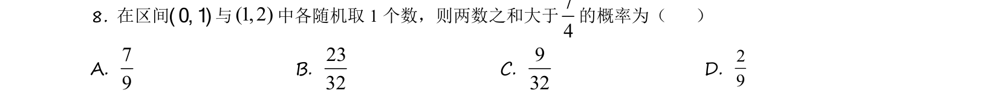
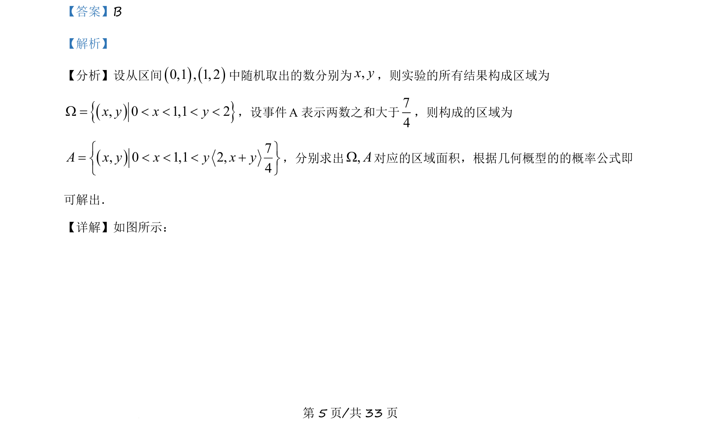
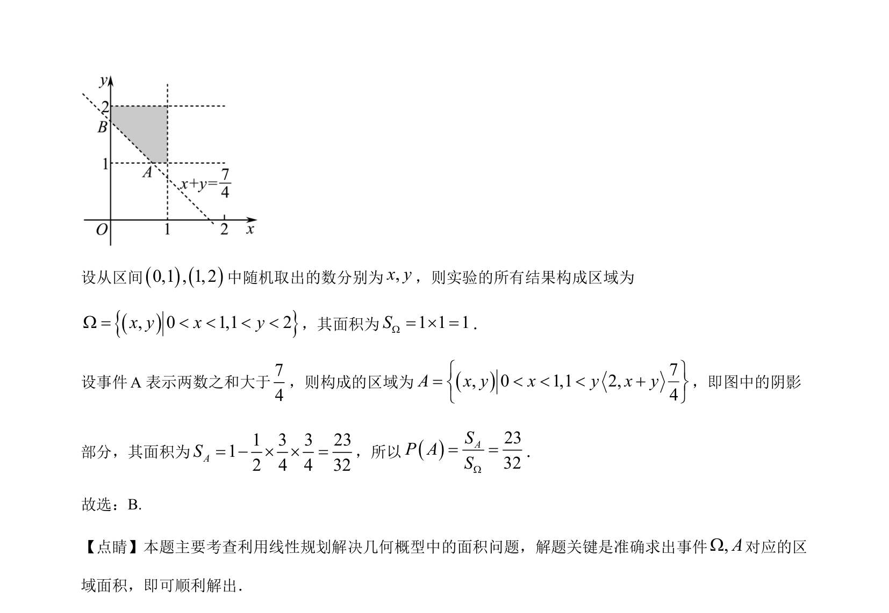

考点：几何概型 线性规划 概率计算

本题通过线性规划求几何概型面积计算概率。


📄 原 PDF 第 5 页：
素材/真题/吉林/2008-2024·（吉林）数学高考真题/2021年高考数学试卷（理）（全国乙卷）（新课标Ⅰ）（解析卷）.pdf
【答案】B 【解析】 【分析】设从区间()()0,1 , 1, 2中随机取出的数分别为,x y，则实验的所有结果构成区域为 (){}, 0 1,1 2x y x yW = < < < <，设事件A表示两数之和大于74 ，则构成的区域为 ()7, 0 1,1 2,4A x y x y x yì ü= < < < +í ýî þ ，分别求出,AW对应的区域面积，根据几何概型的的概率公式即 可解出． 【详解】如图所示：